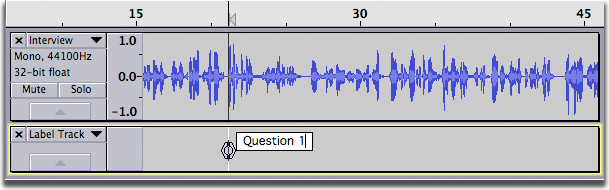

Editing, Resizing and Moving labels
From Audacity Manual
Contents
- Changing the length and position of labels with the mouse
- Moving a point label
- Expanding a point label
- Moving and resizing a region label
- Adjusting the junction point where two labels meet
- Moving a label when there is a selection
- Using cut, copy and paste
- Using the Context Menu
Changing the length and position of labels with the mouse
You can move a label by clicking and dragging its circle handle. You can change the length of a label by clicking and dragging its triangle handle.
Holding Shift while dragging reverses this behavior, so that dragging a circle handle changes the length of the label, and dragging a triangle handle moves the label. For example, this lets you resize a label by holding Shift while dragging its circle handle, then release Shift to move the resized label without having to move the mouse pointer to its triangle handle.
In the case where two labels meet you can adjust the junction point where they meet by clicking and dragging their shared circle handle.
Moving a point label
You can move a point label by clicking and dragging its circle handle:
Before After
Expanding a point label
You can expand a point label into a region label by clicking and dragging either of its triangle handles:

Before After
Moving and resizing a region label
You can move a region label by clicking and dragging either of its circle handles:
Before After
You can change the length of a region label by clicking and dragging one of its triangle handles:
Before After
Adjusting the junction point where two labels meet
You can adjust the junction point where two labels meet by clicking and dragging their shared circle handle:

Before After
Moving a label when there is a selection
The illustration below shows what happens if you click in a label to select it, press Enter, then move the label.
Before After
Contrast this to what happens if you click in a label to select it, then move the label.
Before After
Using cut, copy and paste
Cutting and Pasting Region Labels
You can cut and paste region labels using and , but you have to make sure you don't select any audio, or you will end up cutting and pasting audio where you probably didn't intend.
In the image below, the label was selected by clicking in it, then the audio track was unselected by shift-clicking in the Track Control Panel of the audio track (this can also be done with the keyboard by ENTER, UP then ENTER). The label was then cut to the clipboard with :
To paste the label at a different point in the audio track, either a) click in the audio track at the point where you would like the label to begin then shift-click in the label track to select it; or b) click in the label track at the point where you would like the label to begin. The label can then be pasted to that spot using .
Cutting and Pasting Point Labels
You can also cut and paste point labels, but the procedure is tricky. In the image below, the point label is selected for editing as in the above example with a region label, but there is no selected region in the label track.
What happens next depends on the setting of the "Select all audio in project, if none selected" preference in Tracks Preferences:
- If that preference is not selected, will be disabled and pressing CTRL + X will do nothing.
- If that preference is selected and you do , all audio and labels in the project will be cut to the clipboard.
To cut and paste a point label to a different location, first select the text of the label as shown below. Note the difference in appearance of selected label text (the text is highlighted separately from the box) versus a selected label (where the entire label box is highlighted).
Do - the text of the label is cut to the clipboard, leaving a label with no text. Press DELETE to delete the label. Click in the new location for the label and do :
- 
Using the Context Menu
There is a handy feature where you can select an area of text in a label then right-click to cut, copy or paste over (if there is text currently in the clipboard) that text. This allows you to click in another label, right-click, then paste that text in. So in our example you could select and copy "Question" and then paste it into the appropriate labels without having to type that word every time. The example below shows one way this can be used.
Click in a label, then select the label text. Note the difference in appearance of selected label text (as shown below - the text is highlighted separately from the box) versus a selected label (where the entire label box is highlighted). Right-click in the label:
Now select the range of audio corresponding to the second question and click on . Right click (control-click on a Mac) in the new label:
The text "Question" will be pasted into the label, and all you have to type is " 2" to complete the label. Alternatively you could select the range in the label track instead of the audio track, then to create the label with that text.